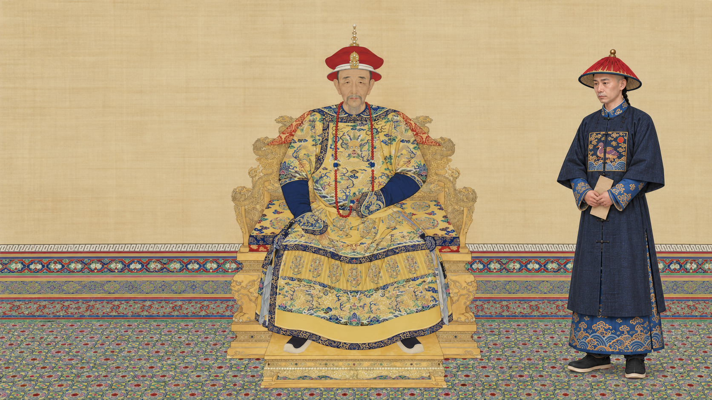

宫廷书房为情境化场景 · 非某日真实会议复原
御览资料案卷
舆图调查两处线索已阅图
寺庙图样两处线索已阅寺
画样無量壽尊佛
太监 · 情境演绎先打开这份舆图，看看相关的历史线索。
☝点书案上的舆图拖动、缩放后点亮两处资料标记
图御览舆图历史关系示意 · 不表示疆界
0 / 2 已查看
点亮图上的两处标记，查看不同历史资料
寺承德 · 普宁寺现存建筑摄影 · 非乾隆时期原貌
0 / 2 已观察
拖动查看照片，点两个光标观察相关线索照片来源与许可
画样呈览 · 情境演绎
乾隆十九年十二月 · 画样已有修改记录
点击画样卷轴，慢慢展开
繁本《缂丝无量寿尊佛》档案记录了先行画样与修改；论文将繁本与普宁寺及须弥灵境的营建、悬挂用途相联系。
▱请将设备横过来本游戏为 16:9 横屏体验